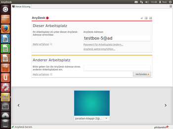
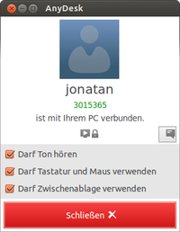

AnyDesk
Dieser Artikel wurde für die folgenden Ubuntu-Versionen getestet:
Ubuntu 17.10 Artful Aardvark
Ubuntu 16.04 Xenial Xerus
Ubuntu 14.04 Trusty Tahr
Zum Verständnis dieses Artikels sind folgende Seiten hilfreich:
Das Programm AnyDesk  ist eine proprietäre plattformübergreifende Software für den Fernzugriff auf andere Rechner, vergleichbar mit TeamViewer. Der Fokus der Anwendung liegt vor allem in der Leistung (geringe Latenz und hohe Bildrate selbst bei geringer Bandbreite) und formuliert gar den Anspruch, stundenlanges Arbeiten an entfernten Rechnern angenehm zu machen. Die Verbindung läuft wahlweise über einen AnyDesk-Server oder als Direktverbindung. Für Privatanwender ist AnyDesk kostenlos nutzbar.
ist eine proprietäre plattformübergreifende Software für den Fernzugriff auf andere Rechner, vergleichbar mit TeamViewer. Der Fokus der Anwendung liegt vor allem in der Leistung (geringe Latenz und hohe Bildrate selbst bei geringer Bandbreite) und formuliert gar den Anspruch, stundenlanges Arbeiten an entfernten Rechnern angenehm zu machen. Die Verbindung läuft wahlweise über einen AnyDesk-Server oder als Direktverbindung. Für Privatanwender ist AnyDesk kostenlos nutzbar.
Experten-Info:
Beim Aufruf werden drei Prozesse gestartet; einer für die eigentliche Programmlogik (lokaler Service), einer für das Symbol im Benachrichtigungsfeld (Tray) und einer für die Programmoberfläche (Frontend). In einer künftigen Version soll der lokale Service durch einen Hintergrunddienst ersetzt werden, der mit erhöhten Rechten zum Systemstart gestartet wird und den Nutzer in die Lage versetzt, bereits auf den Anmeldebildschirm zuzugreifen.
Installation¶

Von der AnyDesk Software GmbH werden
DEB-Pakete  angeboten.
Die Pakete können für Ubuntu 16.04 und Ubuntu 14.04
heruntergeladen werden.
Nachdem man sie für die korrekte Ubuntuversion und Architektur geladen hat, müssen DEB-Pakete noch installiert werden.
angeboten.
Die Pakete können für Ubuntu 16.04 und Ubuntu 14.04
heruntergeladen werden.
Nachdem man sie für die korrekte Ubuntuversion und Architektur geladen hat, müssen DEB-Pakete noch installiert werden.
Hinweis!
Fremdpakete können das System gefährden.
Durch einen Klick auf "Erweiterte Ansicht" zeigt AnyDesk an ob es aktuell ist.
Bedienung¶
 Nach erfolgreicher Installation findet man das Programm bei Ubuntu-Varianten mit einem Anwendungsmenü unter "Internet -> AnyDesk". Alternativ lässt es sich im Terminal mit dem folgenden Befehl starten [2].
anydesk
Fehlermeldungen werden nicht im Terminal ausgegeben, sondern in die Datei ~/.anydesk/anydesk.log geschrieben.
Startparameter¶
Beim Aufruf können noch die in der Tabelle aufgeführten Startparameter mitgegeben werden. In jedem Fall startet der Aufruf die gewünschten Prozesse losgelöst vom Terminal.
| Parameter und Optionen | ||
| Parameter | Beschreibung | |
--local-service | startet Anydesk minimiert (lokaler Service und Tray) | |
--service | startet Anydesk minimiert (lokaler Service und Tray) | |
--tray | startet Anydesk minimiert (lokaler Service und Tray) | |
--frontend | startet AnyDesk normal (lokaler Service, Tray, Frontend) | |
--connect ID | startet Anydesk und verbindet mit der angegebenen AnyDesk ID bzw. IP-Adresse | |
Beispiel:
anydesk --connect maxmuster@ad
Hinweis:
Die beiden Parameter --local-service und --service sollen zukünftig zur Unterscheidung zwischen einem lokalen Service (normaler Prozess) und einem globalen Service (Hintergrunddienst) dienen. Aktuell ist dies aber noch nicht implementiert (Stand: Version 2.3.1). AnyDesk befindet sich noch in der Betaphase. Voraussichtlich werden in den kommenden Versionen noch einige Startparameter hinzukommen.
Verbindungen aufbauen¶

Um eine Verbindung aufbauen zu können, muss auf zwei Rechnern AnyDesk gestartet werden. Jeder Rechner bekommt eine eindeutige AnyDesk-Adresse (Bsp. Rechnername@ad), welche direkt im Programmfenster angezeigt wird. Versucht man über die AnyDesk-Adresse eines anderen Rechners auf diesen zuzugreifen, so erscheint ein Dialog mit der Frage, ob der Zugriff gestattet werden soll und kann einzeln über den Zugriff auf Ton, Zwischenablage und Maus & Tastatur entscheiden. Alternativ lässt sich in den Einstellungen ein permanentes Passwort einrichten.
Direktverbindung¶
Gibt man anstelle der AnyDesk-Adresse die IP-Adresse eines anderen Rechners ein:
anydesk --connect IP-ADRESSE
so wird eine TCP-Direktverbindung zum Zielrechner auf Port 7070 hergestellt. Im lokalen Netzwerk kann alternativ der Rechnername Rechnername.local eingegeben werden (siehe auch Avahi). In diesen Fällen kann logischerweise die Authentizität des Gegenübers nicht mehr über die AnyDesk-Server kryptographisch verifiziert werden.
Probleme¶
Wayland wird aktuell noch nicht unterstützt, daher muß man unter Ubuntu 17.10 beim Login Xorg auswählen (Link zur Hersteller Information: Does AnyDesk work on my Linux System?).
Links¶
Leistungsvergleich (PDF)
 mit anderer Remote-Software
mit anderer Remote-Software
Aus der Ferne – Anydesk als Konkurrenz zu Teamviewer
- LinuxUser, 03/2016Fernzugriff - Liste der Wikiartikel zum Thema
- Erstellt mit Inyoka
-
 2004 – 2017 ubuntuusers.de • Einige Rechte vorbehalten
2004 – 2017 ubuntuusers.de • Einige Rechte vorbehalten
Lizenz • Kontakt • Datenschutz • Impressum • Serverstatus -
Serverhousing gespendet von